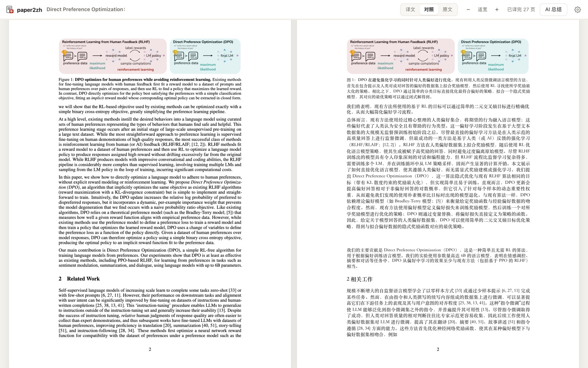

图表、公式、版式原样不动，只把正文换成中文；旁边附一份 AI 速读总结。
纯前端运行，PDF 只在你的浏览器和你选的翻译服务之间传输。
把 PDF 拖到这里，或

逐页识别正文、标题和图注，把原文擦掉、原位排入译文。图片、表格、公式、参考文献保持原样；段落里的公式用原文字形，粗体照旧，引用缩成可点开的小上标。
鼠标悬停任一段落即可看原文；也可切到左右对照或纯原文模式。
一句话结论、问题、方法、关键数字、局限，以及最值得看的图表，几百字读完。
浏览器里打开论文 PDF（arXiv、OpenReview、会议官网都行），点工具栏上的 paper2zh 图标，就会在新标签页打开中文版。扩展会带上你在原站的登录状态去取 PDF，所以需要登录才能看的论文也能用。
chrome://extensions，打开右上角的“开发者模式”。